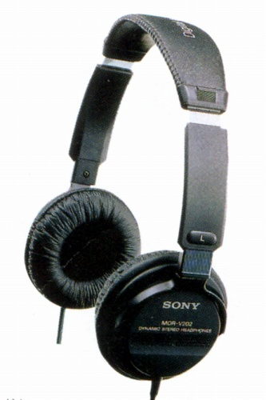
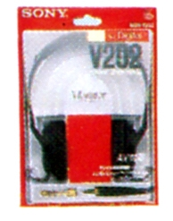
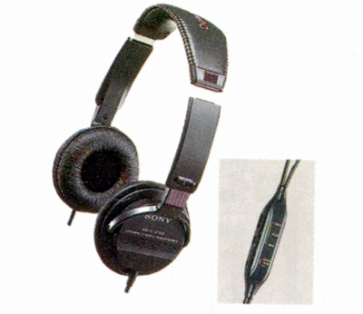
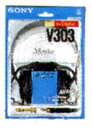

MDR-V202

■価格 4,400円
■型式 ダイナミック型密閉式
■振動板 30�oドーム型
■インピーダンス 45Ω
■再生周波数帯域 8-25,000Hz
■許容入力 500mW
■感度 103ｄB/mW
■コード 5ｍ OFCリッツ線
ステレオ2ウェイプラグ
■重量 150g（コード含まず）
■発売 1988年頃
■販売終了 1989年頃
■備考
スペックはMDR-CD100に近いが、CD100にはサマリュウム・
コバルト磁石を用いているが、こちらは採用されていない。

（パッケージ）
なお、後にコントローラ（ボリュウム、ステレオ/モノ、メイン/サブ切替）付きのMDR-V303(5,500円)が追加


(MDR-V303とそのパッケージ、本体スペックはV202と同じ）